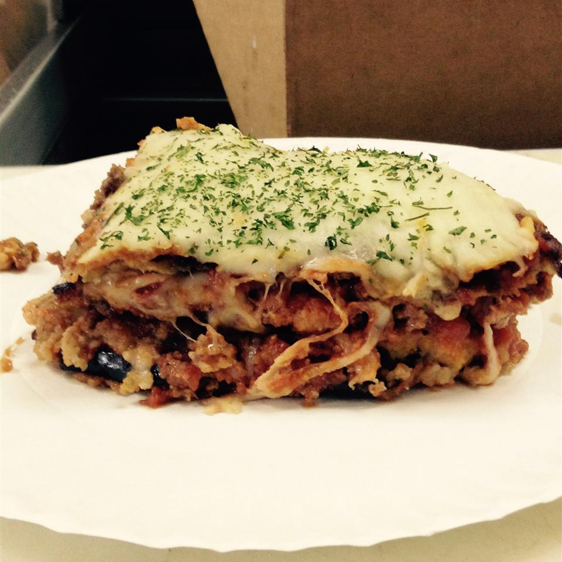

Eggplant Lasagna

(picture sourced from here)
Description
Eggplant lasagna substitutes the pastry sheets between the layers of minced beef and cheese for thin slices of eggplant, making the dish quite keto-friendly. It's also quite filling, which is good if you're going for one-meal-a-day sorts of regimens. Serve with salad.
Ingredients
- Parmesan cheese
- Mozzarella cheese
- Two large eggplants, peeled and sliced into thin "sheets"
- Olive oil
- ~500mg minced beef
- Chunky pasta sauce (I personally prefer the chilli tomato offering from Leggo's Providore range, has the added benefit of being lower in carbs than other options.)
- Black beans/kidney beans (optional; I find this turns the lasagna into more of a moussaka: bit of a spin on the recipe. Too many beans will also knock you out of ketosis.)
- Red wine (optional)
- Small onion (optional - this may also contribute to the carb load if you're on keto.)
- Three to four cloves of garlic (optional)
- Breadcrumbs (optional - careful of carbs if you're on keto!)
- Two eggs (optional)
Steps
- Preheat oven about 180C. Cover a tray with baking paper (to bake the eggplant slices) and a dish (for the lasagna proper).
- You can simply brush the slices front-and-back with oil, season with salt and pepper, put them on the tray, and pop the tray in the oven until the slices are a golden brown, or you can crumb the eggplant slices before baking them, if you prefer - whisk eggs and water together in a shallow dish, and combine Parmesan cheese, bread crumbs, salt, and ground black pepper in a separate shallow dish. Dip eggplant slices into egg mixture, then press each gently into bread crumb mixture. Gently tap off any excess crumbs, pop them on the tray, and bake till golden brown. No matter what you choose to do, don't forget to brown both sides similarly.
- Remove the eggplant tray from the oven and place aside. Turn up the oven to 200C.
- While the oven is preheating again, pop some oil in a saucepan and toss in the onion and garlic if you like. Else, stir in the minced beef (add the red wine if you like), season with salt and pepper, and cook for about ten minutes until the beef is brown and crumbly, and stir in the pasta sauce. (You may also add the kidney beans/black beans at the same time as the beef, if you're choosing to use them.)
- Once the beef is cooked, start layering the lasagna dish with 1/3 of the eggplant, then 1/3 of the minced beef mixture, and 1/3 cheese, in layers. Repeat this twice more, then top with a generous layer of Mozzarella.
- Pop the lasagna dish in the oven, and bake for 15 minutes or so until the cheese is bubbling and starting to go a golden brown. Pull it out of the oven, allow to cool for a few minutes, then garnish with chopped parsley and cut yourself a piece! Usually makes four very-filling square slices, good for when you're combining keto and intermittent fasting.
{kind=link}